Mapping a CIViC oncogenicity assertion to GKM
Notebook source
Rendered from notebooks/civic/vignettes/oncogenicity/civic-oncogenicity-gkm.ipynb.
This notebook follows CIViC Oncogenic Assertion 202 into the GA4GH Genomic Knowledge Model (GKM). It accompanies the CIViC oncogenicity vignette.
It starts with CIViC's assertion page, then follows the claim, assessment, variant context, evidence, and approval into connected GKM records.
Before you begin
This notebook assumes familiarity with the GKM Toolkit, the GA4GH Reference Implementations, and the CIViC bundle.
New to how GKM data is represented or explored? Start with Explore GKM Toolkit features with CIViC bundle examples. It walks through loading a bundle example, inspecting its schema and collections, resolving linked records, and preparing data for another tool.
CIViC oncogenicity assertions
CIViC is a community-curated knowledgebase of cancer variant interpretations.
A Molecular Profile supplies the variant context and can group one or more CIViC Variants. An Evidence Item records a curator-reviewed interpretation of an observation from a source publication.
An Oncogenic Assertion connects a Molecular Profile and disease, then records CIViC's classification.
Oncogenicity assertions also record oncogenicity codes from the ClinGen/CGC/VICC guidelines (Horak et al. 2022). Each code identifies a guideline criterion met by the assertion.
CIViC's information model describes these records and their relationships in more detail.
CIViC Assertion 202
CIViC Assertion 202 classifies RET M918T as likely oncogenic in medullary thyroid carcinoma.
Its summary shows the claim, classification, oncogenicity codes, approval status, and attached Evidence Items.
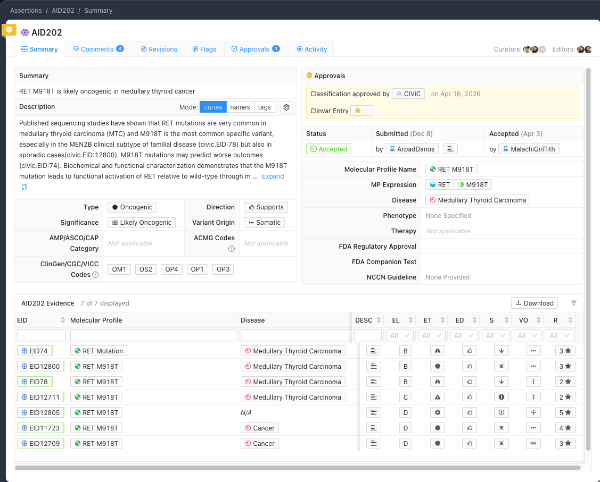
GKM represents the claim as a proposition and CIViC's assessment as a Statement. The following sections inspect those records.
Mapping the CIViC assertion to GKM
Load the published GKM bundle
CIViCpy creates GKM-compatible records and bundles from CIViC data. Load the published CIViC bundle.
Note
The examples read the published CIViC bundle. On first use, the Toolkit may download and cache it locally.
import json
from ga4gh.gkm.bundles import BundleRepository, load_repository_bundle
repository = BundleRepository(refresh=False)
civic_bundle = load_repository_bundle(repository, "civic", refresh=False)
civic_bundle
Output:
Retrieve the oncogenic assertion from the bundle
Retrieve CIViC AID 202. The output identifies its GKM record type.
assertion_id = "civic.aid:202"
assertion = civic_bundle.assertion[assertion_id]
type(assertion)
Output:
Assessment structure
CIViC records an assessment for the interpretation. Direction records that CIViC supports it. Significance records the classification: likely oncogenic.
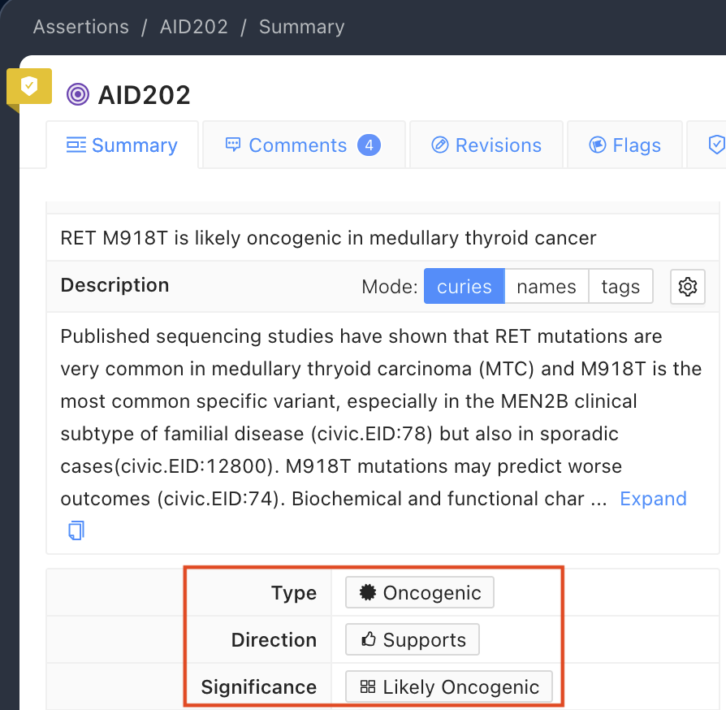
GKM represents the assessment as a Statement. The next output shows the Statement and its assessment fields.
print(f"Assertion type: {type(assertion).__name__}")
print(f"Assessment direction: {assertion.direction} the proposition")
classification = assertion.classification.primaryCoding.code.root
print(f"Classification: {classification}")
proposition = assertion.proposition
variant = proposition.subjectVariant
disease = proposition.objectTumorType
gene = proposition.geneContextQualifier
origin = proposition.alleleOriginQualifier
evidence_lines = assertion.hasEvidenceLines
framework = evidence_lines[0].specifiedBy.name
Output:
Assertion type: VariantOncogenicityStatement
Assessment direction: supports the proposition
Classification: likely oncogenic
CIViC identifies this as an oncogenicity assertion. CIViCpy maps it to VariantOncogenicityStatement, a specific VA-Spec Statement profile that records CIViC's assessment and classification.
Claim structure
The Statement links to a VariantOncogenicityProposition, which holds the variant, gene context, allele origin, and disease.
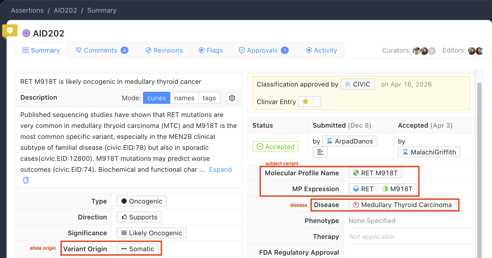
The output shows the fields that make up the claim.
print(f"Subject variant: {variant.name}")
print(f"Gene context: {gene.name}")
print(f"Allele origin: {origin.name}")
print(f"Disease: {disease.root.name}")
print(f"Claim: {origin.name} {variant.name} is oncogenic for {disease.root.name}")
Output:
Subject variant: RET M918T
Gene context: RET
Allele origin: somatic
Disease: Medullary Thyroid Carcinoma
Claim: somatic RET M918T is oncogenic for Medullary Thyroid Carcinoma
The VariantOncogenicityProposition states: somatic RET M918T is oncogenic for medullary thyroid carcinoma. The separate Statement records CIViC's assessment of that claim.
Mapping the variant and disease
Storing the molecular profile and its variant context
The assertion links to a CIViC Molecular Profile, which provides its variant context.
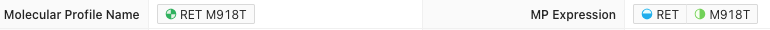
CIViCpy represents the Molecular Profile as a Cat-VRS CategoricalVariant, which becomes the proposition's subjectVariant.
members = [member.root for member in variant.members]
civic_variant = next(
mapping.coding
for mapping in variant.mappings or []
if mapping.coding.system == "https://civicdb.org/links/variant/"
)
print(f"Categorical variant: {variant.name} ({variant.id})")
Output:
The output identifies the CategoricalVariant. The CIViC Molecular Profile page shows that M918T is attached to it:
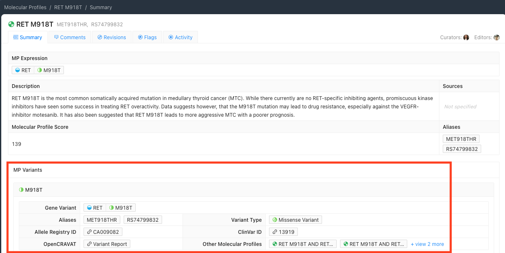
The linked CIViC Variant supplies the sequence context. CIViC stores its genomic, coding, and protein representations under one Variant ID:
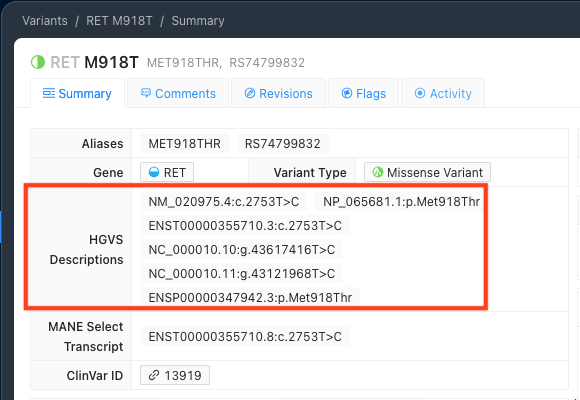
GKM represents those sequence contexts as VRS Alleles. The output lists the corresponding identifiers.
print(f"CIViC Variant ID: {civic_variant.id}")
print("VRS Allele IDs by sequence context:")
context_labels = {
"hgvs.c": "Coding",
"hgvs.g": "Genomic",
"hgvs.p": "Protein",
}
protein_allele = next(
member
for member in members
if any(expression.syntax == "hgvs.p" for expression in member.expressions)
)
for member in members:
expressions = [expr.value for expr in member.expressions]
context = context_labels[member.expressions[0].syntax]
print(f" {context}:")
print(f" VRS ID: {member.id}")
print(f" HGVS Description(s): {', '.join(expressions)}\n")
Output:
CIViC Variant ID: civic.vid:113
VRS Allele IDs by sequence context:
Coding:
VRS ID: ga4gh:VA.TZBjEPHhLRYxssQopcOQLWEBQrwzhH3T
HGVS Description(s): NM_020975.4:c.2753T>C
Genomic:
VRS ID: ga4gh:VA.ON-Q17mJBYx3unmQ8GiqllzEphxR-Fie
HGVS Description(s): NC_000010.10:g.43617416T>C, NC_000010.11:g.43121968T>C
Protein:
VRS ID: ga4gh:VA.hEybNB_CeKflfFhT5AKOU5i1lgZPP-aS
HGVS Description(s): NP_065681.1:p.Met918Thr, ENSP00000347942.3:p.Met918Thr
Full VRS Allele representation
Each VRS Allele has a precise, computable identifier. The protein-level member is shown next.
print(f"\nExample VRS Protein Allele: {protein_allele.id}")
print(f"Name: {protein_allele.name}")
for expression in protein_allele.expressions:
print(f" {expression.syntax}: {expression.value}")
Output:
Example VRS Protein Allele: ga4gh:VA.hEybNB_CeKflfFhT5AKOU5i1lgZPP-aS
Name: RET M918T
hgvs.p: NP_065681.1:p.Met918Thr
hgvs.p: ENSP00000347942.3:p.Met918Thr
This JSON is the structured representation behind the protein-level identifier.
Output:
{
"id": "ga4gh:VA.hEybNB_CeKflfFhT5AKOU5i1lgZPP-aS",
"type": "Allele",
"name": "RET M918T",
"digest": "hEybNB_CeKflfFhT5AKOU5i1lgZPP-aS",
"expressions": [
{
"syntax": "hgvs.p",
"value": "NP_065681.1:p.Met918Thr"
},
{
"syntax": "hgvs.p",
"value": "ENSP00000347942.3:p.Met918Thr"
}
],
"location": {
"id": "ga4gh:SL.oIeqSfOEuqO7KNOPt8YUIa9vo1f6yMao",
"type": "SequenceLocation",
"digest": "oIeqSfOEuqO7KNOPt8YUIa9vo1f6yMao",
"sequenceReference": {
"type": "SequenceReference",
"refgetAccession": "SQ.jMu9-ItXSycQsm4hyABeW_UfSNRXRVnl"
},
"start": 917,
"end": 918,
"sequence": "M"
},
"state": {
"type": "LiteralSequenceExpression",
"sequence": "T"
}
}
The coding and genomic Alleles use a similar representation.
CIViC disease as a mapped concept
CIViC links each assertion to a Disease record. Here, medullary thyroid carcinoma is the disease in the oncogenicity claim.
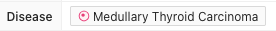
The linked disease record provides the CIViC term that GKM maps to a normalized disease concept:
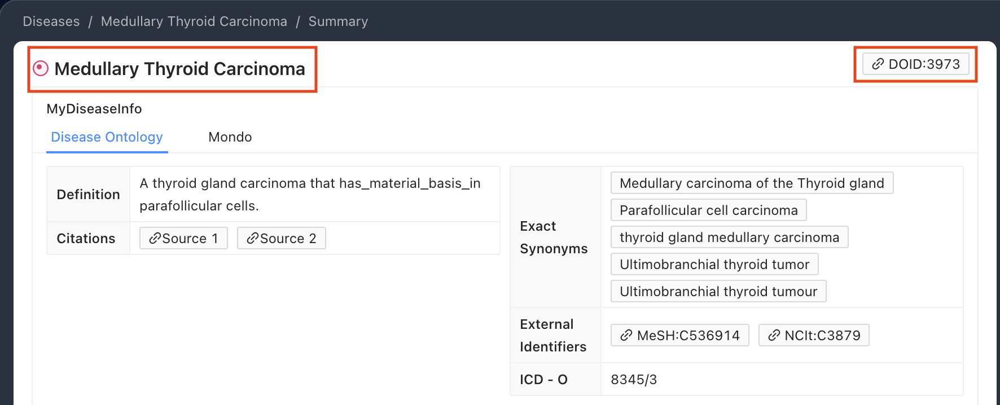
The CIViC Disease record supplies the display name. GKM retains it and adds a computable disease identifier, helping other systems recognize the same disease concept:
print("Disease:", disease.root.name)
for mapping in disease.root.mappings or []:
coding = mapping.coding
print(f" {mapping.relation}: {coding.system}{coding.code.root}")
Output:
Disease concept JSON
The next output shows the full mapped disease concept:
Output:
{
"id": "civic.did:15",
"conceptType": "Disease",
"name": "Medullary Thyroid Carcinoma",
"mappings": [
{
"coding": {
"system": "https://disease-ontology.org/?id=",
"code": "DOID:3973"
},
"relation": "exactMatch"
}
]
}
Mapping the evidence behind the classification
Oncogenicity criteria as Evidence Lines
CIViC stores oncogenicity codes on the assertion to document the guideline criteria used for its classification. Assertion 202 meets OM1, OS2, OP4, OP1, and OP3.
The screenshot shows the oncogenicity codes in the assertion summary.
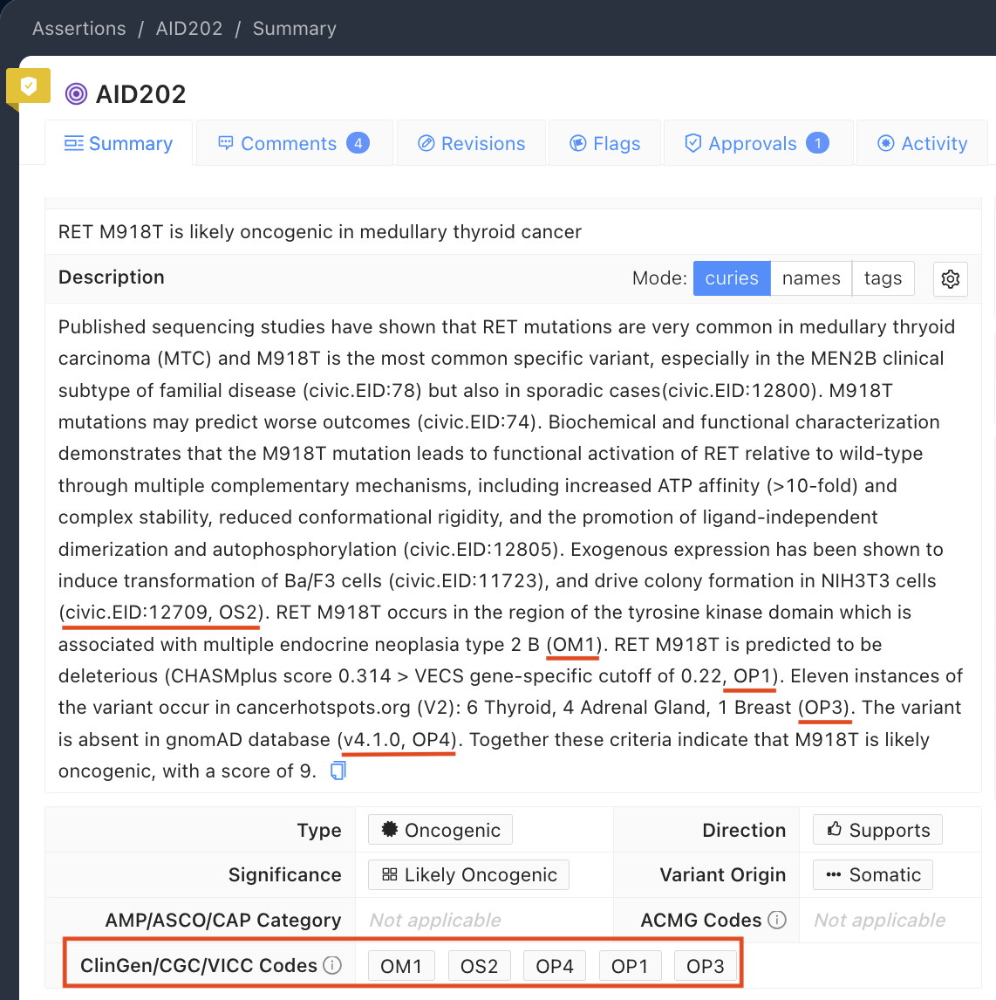
GKM represents each criterion as a VA-Spec Evidence Line. The output lists each line's method, strength, and score.
print(f"{'Code':<6}{'Method':<32}{'Strength':<14}{'Score'}")
print("-" * 62)
evidence_codes = [
line.evidenceOutcome.primaryCoding.code.root for line in evidence_lines
]
for line in evidence_lines:
code = line.evidenceOutcome.primaryCoding.code.root
method = line.specifiedBy.methodType
strength = line.strengthOfEvidenceProvided.primaryCoding.code.root
score = line.scoreOfEvidenceProvided
print(f"{code:<6}{method:<32}{strength:<14}{score}")
total_score = sum(line.scoreOfEvidenceProvided for line in evidence_lines)
print(f"\nTotal classification score: {total_score}")
evidence_summary = ", ".join(
f"{line.specifiedBy.methodType.replace('_', ' ')} "
f"({line.evidenceOutcome.primaryCoding.code.root})"
for line in evidence_lines
)
Output:
Code Method Strength Score
--------------------------------------------------------------
OM1 functional_domain_location moderate 2
OS2 functional_assay strong 4
OP4 population_frequency supporting 1
OP1 computational_prediction supporting 1
OP3 somatic_hotspot_recurrence supporting 1
Total classification score: 9
Why oncogenicity codes and Evidence Items remain separate
The Evidence Lines contribute scores of 2 (OM1), 4 (OS2), and 1 each (OP4, OP1, and OP3), for a total of 9.
CIViC does not consistently link each oncogenicity code to an Evidence Item. GKM therefore leaves EvidenceLine.hasEvidenceItems empty. The output shows those empty links.
for line in evidence_lines:
criterion = line.evidenceOutcome.primaryCoding.code.root
print(criterion, "hasEvidenceItems:", line.hasEvidenceItems)
Output:
OM1 hasEvidenceItems: None
OS2 hasEvidenceItems: None
OP4 hasEvidenceItems: None
OP1 hasEvidenceItems: None
OP3 hasEvidenceItems: None
Evidence Item links
The output confirms that no Evidence Line has a linked Evidence Item. CIViCpy preserves Evidence Item URLs without inferring a code-to-item link. Evidence strength belongs to an Evidence Line. Evidence level and trust rating belong to the CIViC Evidence Item and are not structured in this bundle.
Linking CIViC Evidence Items to source documents
CIViC lists Evidence Items separately from the oncogenicity codes:
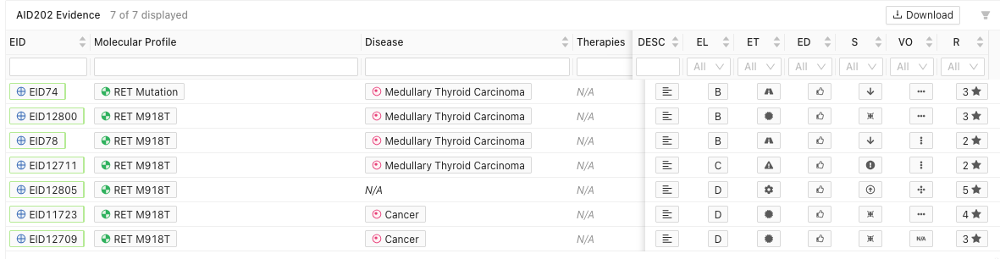
CIViCpy keeps these links in assertion.reportedIn. The output follows each link to its source document.
evidence_item_documents = [
document for document in assertion.reportedIn if hasattr(document, "urls")
]
evidence_item_links = []
print("Evidence Item URL -> source document")
for document in evidence_item_documents:
civic_eid_url = next(url for url in document.urls if "/links/evidence/" in url)
pmid_url = f"https://pubmed.ncbi.nlm.nih.gov/{document.pmid}/"
evidence_item_links.append(
f"[{civic_eid_url}]({civic_eid_url}) ([PMID {document.pmid}]({pmid_url}))"
)
print(f"- {civic_eid_url}: PMID:{document.pmid} ({document.id})")
evidence_item_bullets = "\n".join(f"- {item}" for item in evidence_item_links)
Output:
Evidence Item URL -> source document
- https://civicdb.org/links/evidence/74: PMID:18073307 (civic.sid:44)
- https://civicdb.org/links/evidence/78: PMID:9839497 (civic.sid:92)
- https://civicdb.org/links/evidence/12711: PMID:29515777 (civic.sid:5458)
- https://civicdb.org/links/evidence/12805: PMID:17108110 (civic.sid:5519)
- https://civicdb.org/links/evidence/11867: PMID:32284345 (civic.sid:4870)
- https://civicdb.org/links/evidence/12709: PMID:9191060 (civic.sid:4953)
The output links each CIViC Evidence Item to its source document.
The next output identifies the ClinGen/CGC/VICC guideline cited by the Evidence Lines. It defines how to weigh the criteria.
guideline = evidence_lines[0].specifiedBy.reportedIn
print(guideline.name)
print(guideline.title)
print("PMID:", guideline.pmid)
Output:
Horak et al., 2022, Genet Med.
Standards for the classification of pathogenicity of somatic variants in cancer (oncogenicity): Joint recommendations of Clinical Genome Resource (ClinGen), Cancer Genomics Consortium (CGC), and Variant Interpretation for Cancer Consortium (VICC)
PMID: 35101336
Mapping CIViC approval
CIViC records its curation and review history with the assertion. In GKM, a VA-Spec Contribution connects the approval activity, agent, and date.
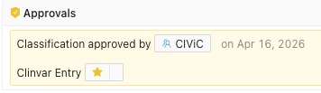
approval = next(
contribution
for contribution in assertion.contributions or []
if contribution.activityType.startswith("approval")
)
approval_date = str(approval.date).split(" ")[0]
for contribution in assertion.contributions or []:
contributor = contribution.contributor
print(f"{contribution.activityType} by {contributor.name} on {contribution.date}")
Output:
The approval output records the activity, agent, and date.
Reusing the connected interpretation
CIViC stores the Molecular Profile, Disease, Evidence Items, and assertion as related records. The published GKM bundle uses pointers to preserve those links. The output shows the connected interpretation.
connected = civic_bundle.normalize(assertion)
print(f"Connected record: {connected['id']}")
print(f"Classification: {connected['classification']['primaryCoding']['code']}")
print(f"Variant: {connected['proposition']['subjectVariant']['name']}")
print(f"Disease: {connected['proposition']['objectTumorType']['name']}")
print("Evidence lines:", ", ".join(evidence_codes))
print(f"Approving agent: {connected['contributions'][0]['contributor']['name']}")
Output:
Connected record: civic.aid:202
Classification: likely oncogenic
Variant: RET M918T
Disease: Medullary Thyroid Carcinoma
Evidence lines: OM1, OS2, OP4, OP1, OP3
Approving agent: CIViC
Construct the complete interpretation
The final cell assembles the connected records for display or exchange. It keeps oncogenicity codes and Evidence Items separate because CIViC does not identify which item supports which code.
from IPython.display import Markdown
from IPython.display import display as ipython_display
interpretation = (
f"**{assertion.id.upper()}:**\n\n"
f"**{origin.name.capitalize()}** **{variant.name}** is "
f"**{classification}** for **{disease.root.name}**, evaluated under the "
f"**{framework}** framework.\n\n"
"The classification has a score of "
f"**{total_score}** and is supported by {evidence_summary} evidence. CIViC associates "
f"the following Evidence Items and source documents with the assertion:\n\n"
f"{evidence_item_bullets}\n\n"
"The classification was "
f"{approval.activityType} by **{approval.contributor.name}** on "
f"**{approval_date}**."
)
ipython_display(Markdown(interpretation))
Output:
CIVIC.AID:202:
Somatic RET M918T is likely oncogenic for Medullary Thyroid Carcinoma, evaluated under the ClinGen/CGC/VICC Guidelines for Oncogenicity, 2022 framework.
The classification has a score of 9 and is supported by functional domain location (OM1), functional assay (OS2), population frequency (OP4), computational prediction (OP1), somatic hotspot recurrence (OP3) evidence. CIViC associates the following Evidence Items and source documents with the assertion:
- https://civicdb.org/links/evidence/74 (PMID 18073307)
- https://civicdb.org/links/evidence/78 (PMID 9839497)
- https://civicdb.org/links/evidence/12711 (PMID 29515777)
- https://civicdb.org/links/evidence/12805 (PMID 17108110)
- https://civicdb.org/links/evidence/11867 (PMID 32284345)
- https://civicdb.org/links/evidence/12709 (PMID 9191060)
The classification was approval.last_reviewed by CIViC on 2026-04-16.
Why GKM matters for exchange
The connected record can be serialized as JSON. An application that supports GKM can use CIViC's claim, classification, evidence, and provenance.
For example, ClinVar This can use GKM-formatted JSON to prepare and track ClinVar submissions.